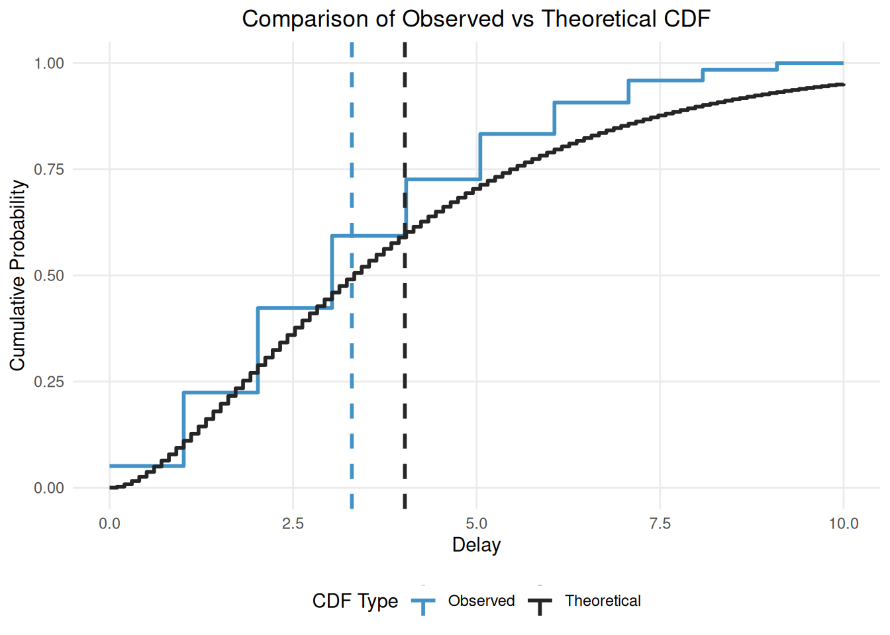

Fitting distributions using primarycensored and fitdistrplus
Sam Abbott
Source:vignettes/fitting-dists-with-fitdistrplus.Rmd
fitting-dists-with-fitdistrplus.Rmd1 Introduction
1.1 What are we going to do in this Vignette
In this vignette, we’ll demonstrate how to use primarycensored in conjunction with fitdistrplus for fitting distributions. We’ll cover the following key points:
- Simulating censored delay distribution data
- Fitting a naive model using
fitdistrplus - Evaluating the naive model’s performance
- Fitting an improved model using
primarycensoredfunctionality - Comparing the
primarycensoredmodel’s performance to the naive model
1.2 What might I need to know before starting
This vignette assumes some familiarity with the fitdistrplus package. If you are not familiar with it then you might want to start with the Introduction to fitdistrplus vignette.
2 Simulating censored and truncated delay distribution data
We’ll start by simulating some censored and truncated delay distribution data. We’ll use the rprimarycensored function (actually we will use the rpcens alias for brevity).
set.seed(123) # For reproducibility
# Define the true distribution parameters
n <- 1000
shape <- 1.77 # This gives a mean of 4 and sd of 3 for a gamma distribution
rate <- 0.44
# Generate fixed pwindow, swindow, and obs_time
pwindows <- rep(1, n)
swindows <- rep(1, n)
obs_times <- rep(8, n) # Truncation at 8
# Function to generate a single sample
generate_sample <- function(pwindow, swindow, obs_time) {
rpcens(
1, rgamma,
shape = shape, rate = rate,
pwindow = pwindow, swindow = swindow, D = obs_time
)
}
# Generate samples
samples <- mapply(generate_sample, pwindows, swindows, obs_times)
# Create initial data frame
delay_data <- data.frame(
pwindow = pwindows,
swindow = swindows,
obs_time = obs_times,
observed_delay = samples,
observed_delay_upper = samples + swindows
)
head(delay_data)## pwindow swindow obs_time observed_delay observed_delay_upper
## 1 1 1 8 2 3
## 2 1 1 8 4 5
## 3 1 1 8 1 2
## 4 1 1 8 5 6
## 5 1 1 8 1 2
## 6 1 1 8 4 5
# Compare the samples with and without secondary censoring to the true
# distribution
# Calculate empirical CDF
empirical_cdf <- ecdf(samples)
# Create a sequence of x values for the theoretical CDF
x_seq <- seq(0, 8, length.out = 100)
# Calculate theoretical CDF
theoretical_cdf <- pgamma(x_seq, shape = shape, rate = rate)
# Create a long format data frame for plotting
cdf_data <- data.frame(
x = rep(x_seq, 2),
probability = c(empirical_cdf(x_seq), theoretical_cdf),
type = rep(c("Observed", "Theoretical"), each = length(x_seq)),
stringsAsFactors = FALSE
)
# Plot
ggplot(cdf_data, aes(x = x, y = probability, color = type)) +
geom_step(linewidth = 1) +
scale_color_manual(
values = c(Observed = "#4292C6", Theoretical = "#252525")
) +
geom_vline(
aes(xintercept = mean(samples), color = "Observed"),
linetype = "dashed", linewidth = 1
) +
geom_vline(
aes(xintercept = shape / rate, color = "Theoretical"),
linetype = "dashed", linewidth = 1
) +
labs(
title = "Comparison of Observed vs Theoretical CDF",
x = "Delay",
y = "Cumulative Probability",
color = "CDF Type"
) +
theme_minimal() +
theme(
panel.grid.minor = element_blank(),
plot.title = element_text(hjust = 0.5),
legend.position = "bottom"
) +
coord_cartesian(xlim = c(0, 8)) # Set x-axis limit to match truncation
3 Fitting a naive model using fitdistrplus
We first fit a naive model using the fitdistcens() function. This function is designed to handle secondary censored data but does not handle primary censoring or truncation without extension.
fit <- delay_data |>
dplyr::select(left = observed_delay, right = observed_delay_upper) |>
fitdistcens(
distr = "gamma",
start = list(shape = 1, rate = 1)
)
summary(fit)## Fitting of the distribution ' gamma ' By maximum likelihood on censored data
## Parameters
## estimate Std. Error
## shape 3.3072925 0.1522836
## rate 0.9198016 0.0450446
## Loglikelihood: -2019.371 AIC: 4042.742 BIC: 4052.558
## Correlation matrix:
## shape rate
## shape 1.0000000 0.9334401
## rate 0.9334401 1.0000000We see that the naive model has fit poorly due to the primary censoring and right truncation in the data.
4 Fitting an improved model using primarycensored and fitdistrplus
We’ll now fit an improved model using the primarycensored package. To do this we need to define the custom distribution functions using the primarycensored package that are required by fitdistrplus. Rather than using fitdistcens we use fitdist because our functions are handling the censoring themselves.
# Define custom distribution functions using primarycensored
# The try catch is required by fitdistrplus
dpcens_gamma <- function(x, shape, rate) {
result <- tryCatch(
{
dprimarycensored(
x, pgamma,
shape = shape, rate = rate,
pwindow = 1, swindow = 1, D = 8
)
},
error = function(e) {
rep(NaN, length(x))
}
)
return(result)
}
ppcens_gamma <- function(q, shape, rate) {
result <- tryCatch(
{
pprimarycensored(
q, pgamma,
shape = shape, rate = rate,
pwindow = 1, D = 8
)
},
error = function(e) {
rep(NaN, length(q))
}
)
return(result)
}
# Fit the model using fitdistcens with custom gamma distribution
pcens_fit <- samples |>
fitdist(
distr = "pcens_gamma",
start = list(shape = 1, rate = 1)
)
summary(pcens_fit)## Fitting of the distribution ' pcens_gamma ' by maximum likelihood
## Parameters :
## estimate Std. Error
## shape 1.7847171 0.11590733
## rate 0.4642622 0.04744382
## Loglikelihood: -1970.286 AIC: 3944.572 BIC: 3954.388
## Correlation matrix:
## shape rate
## shape 1.00000 0.92969
## rate 0.92969 1.00000We see very good agreement between the true and estimated parameters.
Rather than using fitdist() directly primarycensored provides a wrapper function fitdistdoublecens() that can be used to estimate double censored and truncated data. A bonus of this approach is we can specify our data using the fitdistcens left and right formulation and support mixed secondary censoring intervals.
fitdistdoublecens_fit <- delay_data |>
dplyr::select(left = observed_delay, right = observed_delay_upper) |>
fitdistdoublecens(
distr = "gamma",
start = list(shape = 1, rate = 1),
D = 8, pwindow = 1
)
summary(fitdistdoublecens_fit)## Fitting of the distribution ' pcens_dist ' by maximum likelihood
## Parameters :
## estimate Std. Error
## shape 1.7847171 0.11590733
## rate 0.4642622 0.04744382
## Loglikelihood: -1970.286 AIC: 3944.572 BIC: 3954.388
## Correlation matrix:
## shape rate
## shape 1.00000 0.92969
## rate 0.92969 1.00000Note Currently this functionality is limited to a single pwindow, and observation time for all data. If this functionality is of interest then please open an issue on the primarycensored GitHub page.